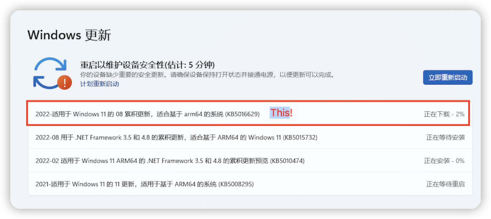
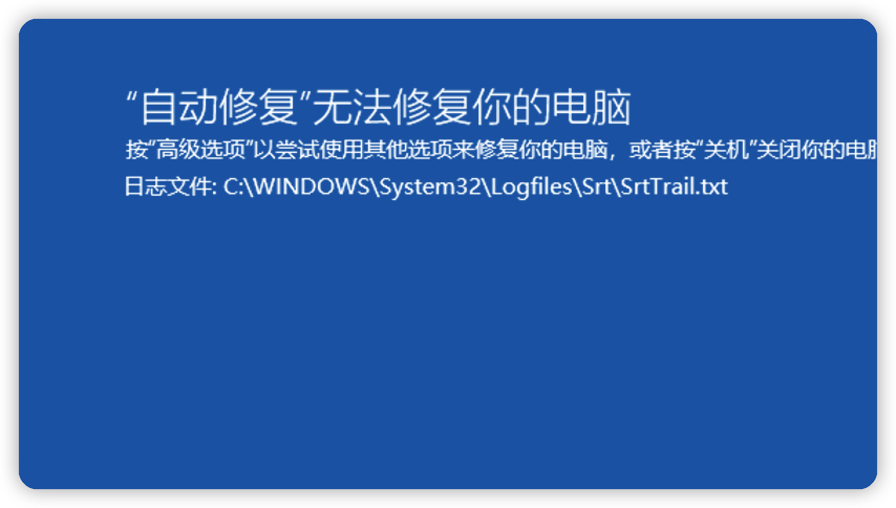
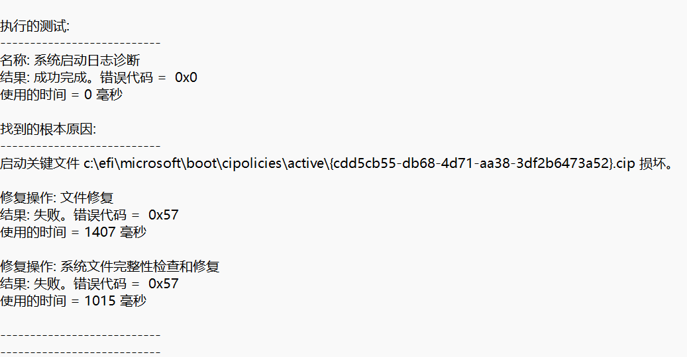

win11 for arm KB5016629 更新使系统崩溃 Record
win11 for arm 更新使系统崩溃 Record
电脑打开情况：

具体的更新名称：2022-适用于 Windows 11 的 08 累积更新，适合基于 arm64 的系统 (KB5016629)
不确定这是不是个例，我通过另外新建一个win11，尝试更新KB5016629，发现依然使系统崩溃！
此电脑是在parallel desktop 17 虚拟机中 ：win11 for arm，平时就不怎么更新，想着有段时间没更新了，更下吧。没想到重新启动直接 windows 崩溃 ！无法开机。🤯🤬 本来就鹅心windows的自动更新，真够反人类的，毕竟它每次更新 绝大多数用户能感知到吗？不知道有多少电脑使用者被这个自动更新影响过！ 想立马关机走人？准备开机工作？想重启点错？使用电源时提醒更新？这些我都遇到过😇
开始找解决办法：
通过高级选项 找到cmd 通过命令
1 | |
查看到具体出错原因：
启动关键文件：c:\efi\microsoft\boot\cipolicies\active{cdd5cb55-db68-4d71-aa38-3df2b6473a52}.cip 损坏。
网上搜索找到几种方法：
1 | |
报：windows 资源保护无法执行该请求
http://t.csdn.cn/fxOIf 通过这篇博客 开：安全模式 、禁用驱动器签名加载 等，均不管用，无法执行 sfc /scannow 命令，依然报 资源保护。
尝试下命令：
1 | |
倒能进行磁盘检查，但好像没发现什么损坏问题，也没有进行修复。
在网上就再没看到其他有用的方法。
最后还是走了重置的路。
重置选择保留个人文件
重置后发现C盘下个人创建的文件夹都还在，说明数据丢失还不是很严重！所有的应用程序都没有了，重置后会给一个删掉的APP 列表。
开始重新下软件 、恢复到崩溃前的正常情况。。 历时整整2天！
当然重置电脑后第一件事：彻底关闭了win更新😤
具体方式使用了这篇文章中的添加注册表: 如何彻底关闭win11更新
经历这次崩溃后，意识到备份的重要性。进行重要操作时，务必备份重要文件、虚拟机拍快照等方式！
爱护电脑，从不更新开始。
本博客所有文章除特别声明外，均采用 CC BY-SA 4.0 协议 ，转载请注明出处！